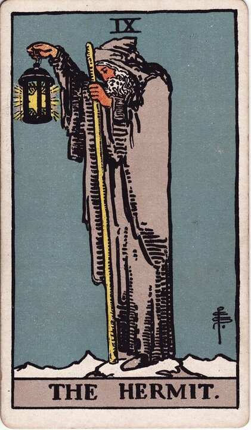

Major Arcana · Card 9
The Hermit Tarot Card Meaning
The Hermit is reflection and inner guidance - the wisdom found by stepping back from the noise. Want to know what he means in your spread? Every reader on our line is hand-vetted - connect in under 60 seconds, $1 for your first minute, hang up anytime.
- Hand-vetted readers
- Available 24/7
- Hang up anytime

The Hermit Card - What It Shows
The Hermit depicts an old man standing alone at the peak of a mountain, holding a lantern in one hand and a staff in the other. The lantern symbolizes the light of inner knowledge; the staff, spiritual mastery, growth, and strength. He has attained a high level of spiritual understanding and is ready to share it with everyone who climbs far enough to meet him.
The Hermit Upright Meaning
Upright, The Hermit advises you to think things through carefully. It tells you to take time to reflect on what steps you need to take in the future - to withdraw from the noise long enough to hear your own guidance. This is a card of deliberate solitude in service of clarity, not isolation for its own sake.
The Hermit Reversed Meaning
Reversed, The Hermit shows you may be resisting a process that would elevate you to a new level of understanding and set you apart. It can also indicate a desire to be alone in a way that has tipped into harmful seclusion - for yourself and for the people around you. The withdrawal that was meant to heal has started to wall you off.
The Hermit as Advice
As advice, The Hermit counsels a deliberate pause: step back, reflect honestly, and let the answer come from within before you act. The right next step gets clear in the quiet, not in the rush.
The Hermit in a Tarot Reading
As a Major Arcana card he points to a significant theme, not a passing detail. His meaning sharpens against the cards around him, his position, and your question - which is what a live reading interprets for your situation. See all 22 cards on the Major Arcana meanings hub, or start a full phone tarot reading.
← Strength · Next: Wheel of Fortune →
What Does The Hermit Mean for You?
A meanings list is the map; a live reading is the territory. We'll connect you with the right hand-vetted tarot reader in under 60 seconds. $1/min first call · 15 minutes for $10 · hang up anytime · 100% satisfaction promise.
Call (888) 920-6662 NowThe Hermit - Frequently Asked Questions
What does The Hermit mean upright?
Reflection and inner guidance - take time to think carefully about your next steps.
What does The Hermit reversed mean?
Resisting growth, or solitude that has turned into harmful isolation.
What does he represent?
Reflection, solitude, spiritual mastery, and the wisdom found by stepping back.
Does The Hermit mean being alone?
Often a deliberate, temporary withdrawal for clarity - not necessarily loneliness. Context refines it.
Get Your Tarot Reading Now
Connected to a hand-vetted reader in under 60 seconds, the cards pulled on your real question, and you hang up with clarity.
Call (888) 920-6662